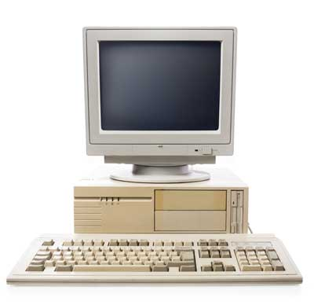

HISTORY OF COMPUTER
The computer as we know it today had its beginning with a 19th
century English mathematics professor name Charles Babbage.
He designed the Analytical Engine and it was this design that the
basic framework of the computers of today are based on.
Generally speaking, computers can be classified into three
generations. Each generation lasted for a certain period of
time,and each gave us either a new and improved computer or an
improvement to the existing computer.
First generation: 1937 - 1946
In 1937 the first electronic digital computer was built by Dr. John
V. Atanasoff and Clifford Berry. It was called the Atanasoff-Berry
Computer (ABC). In 1943 an electronic computer name the Colossus
was built for the military. Other developments continued until in
1946 the first general purpose digital computer, the Electronic
Numerical Integrator and Computer (ENIAC) was built. It is said
that this computer weighed 30 tons, and had 18,000 vacuum tubes
which was used for processing. When this computer was turned on for
the first time lights dim in sections of Philadelphia. Computers of
this generation could only perform single task, and they had no
operating system.
The period of first generation was from
1946-1959. The computers of first generation used vacuum tubes as
the basic components for memory and circuitry for CPU (Central
Processing Unit). These tubes, like electric bulbs, produced a lot
of heat and the installations used to fuse frequently. Therefore,
they were very expensive and only large organizations were able to
afford it. In this generation, mainly batch processing operating
system was used. Punch cards, paper tape, and magnetic tape was
used as input and output devices. The computers in this generation
used machine code as the programming language.

The main features of the first generation are
- Vacuum tube technology
- Unreliable
- Supported machine language only
- Very costly
- Generated a lot of heat
- slow input and output devices Huge size
- Need of AC
- Non-portable
- Consumed a lot of electricity
Some computers of this generation were
- ENIAC
- EDVAC
- UNIVAC
- IBM-701
- IBM-650
Second generation: 1947 - 1962
This generation of computers used transistors instead of vacuum
tubes which were more reliable. In 1951 the first computer for
commercial use was introduced to the public; the Universal
Automatic Computer (UNIVAC 1). In 1953 the International Business
Machine (IBM) 650 and 700 series computers made their mark in the
computer world. During this generation of computers over 100
computer programming languages were developed, computers had memory
and operating systems. Storage media such as tape and disk were in
use also were printers for output.
The period of second
generation was from 1959-1965. In this generation, transistors were
used that were cheaper, consumed less power, more compact in size,
more reliable and faster than the first generation machines made of
vacuum tubes. In this generation, magnetic cores were used as the
primary memory and magnetic tape and magnetic disks as secondary
storage devices. In this generation, assembly language and
high-level programming languages like FORTRAN, COBOL were used. The
computers used batch processing and multiprogramming operating
system.

The main
features of second generation are
- Use of transistors
- Reliable in comparison to first generation computers
- Smaller size as compared to first generation computers
- Generated less heat as compared to first generation computers
- Consumed less electricity as compared to first generation computers
- Faster than first generation computers
- Still very costly
- AC required
- Supported machine and assembly languages
Some computers of this generation were
- IBM 1620
- IBM 7094
- CDC 1604
- CDC 3600
- UNIVAC 1108
Third generation: 1963 - 1971
The invention of integrated circuit brought us the third generation of computers. With this invention computers became smaller, more powerful more reliable and they are able to run many different programs at the same time. In1980 Microsoft Disk Operating System (MS-Dos) was born and in 1981 IBM introduced the personal computer (PC) for home and office use. Three years later Apple gave us the Macintosh computer with its icon driven interface and the 90s gave us Windows operating system.
As a result of the various improvements to the development of the
computer we have seen the computer being used in all areas of life.
It is a very useful tool that will continue to experience new
development as time passes.
The period of third generation
was from 1965-1971. The computers of third generation used
Integrated Circuits (ICs) in place of transistors. A single IC has
many transistors, resistors, and capacitors along with the
associated circuitry. The IC was invented by Jack Kilby. This
development made computers smaller in size, reliable, and
efficient. In this generation remote processing, time-sharing,
multiprogramming operating system were used. High-level languages
(FORTRAN-II TO IV, COBOL, PASCAL PL/1, BASIC, ALGOL-68 etc.) were
used during this generation.

The main
features of third generation are
- IC used
- More reliable in comparison to previous two generations
- Smaller size
- Generated less heat
- Faster
- Lesser maintenance
- Costly
- AC required
- Consumed lesser electricity
- Supported high-level language
Some computers of this generation were
- IBM-360 series
- Honeywell-6000 series
- PDP (Personal Data Processor)
- IBM-370/168
- TDC-316
Fourth Generation 1971-1980
The period of fourth generation was from 1971-1980. Computers of
fourth generation used Very Large Scale Integrated (VLSI) circuits.
VLSI circuits having about 5000 transistors and other circuit
elements with their associated circuits on a single chip made it
possible to have microcomputers of fourth generation.
Fourth generation computers became more powerful, compact,
reliable, and affordable. As a result, it gave rise to Personal
Computer (PC) revolution. In this generation, time sharing, real
time networks, distributed operating system were used. All the
high-level languages like C, C++, DBASE etc., were used in this
generation.

The main
features of fourth generation are
- VLSI technology used
- Very cheap
- Portable and reliable
- Use of PCs
- Very small size
- Pipeline processing
- No AC required
- Concept of internet was introduced
- Great developments in the fields of networks
- Computers became easily available
Some computers of this generation were
- DEC 10
- STAR 1000
- PDP 11
- CRAY-1(Super Computer)
- CRAY-X-MP(Super Computer)
Fifth Generation 1980 - till date
The period of fifth generation is 1980-till date. In the fifth
generation, VLSI technology became ULSI (Ultra Large Scale
Integration) technology, resulting in the production of
microprocessor chips having ten million electronic components. This
generation is based on parallel processing hardware and AI
(Artificial Intelligence) software. AI is an emerging branch in
computer science, which interprets the means and method of making
computers think like human beings. All the high-level languages
like C and C++, Java, .Net etc., are used in this generation.

AI includes
- Robotics
- Neural Networks
- Game Playing
- Development of expert systems to make decisions in real-life situations
- Natural language understanding and generation
The main features of fifth generation are
- ULSI technology
- Development of true artificial intelligence
- Development of Natural language processing
- Advancement in Parallel Processing
- Advancement in Superconductor technology
- More user-friendly interfaces with multimedia features
- Availability of very powerful and compact computers at cheaper rates
Some computers of this generation are
- Desktop
- Laptop
- NoteBook
- UltraBook
- ChromeBook
Theoretical/experimental - Quantum Computer
Quantum computing is the use of quantum-mechanical phenomena such
as superposition and entanglement to perform computation. Computers
that perform quantum computation are known as quantum computers.
Quantum computers are believed to be able to solve certain
computational problems, such as integer factorization (which
underlies RSA encryption), substantially faster than classical
computers. The study of quantum computing is a subfield of quantum
information science. Quantum computing began in the early 1980s,
when physicist Paul Benioff proposed a quantum mechanical model of
the Turing machine.Richard Feynman and Yuri Manin later suggested
that a quantum computer had the potential to simulate things that a
classical computer could not. In 1994, Peter Shor developed a
quantum algorithm for factoring integers that had the potential to
decrypt RSA-encrypted communications. Despite ongoing experimental
progress since the late 1990s, most researchers believe that
"fault-tolerant quantum computing [is] still a rather distant
dream". In recent years, investment into quantum computing research
has increased in both the public and private sector. On 23 October
2019, Google AI, in partnership with the U.S. National Aeronautics
and Space Administration (NASA), published a paper in which they
claimed to have achieved quantum supremacy.[9] While some have
disputed this claim, it is still a significant milestone in the
history of quantum computing.
There are several models of
quantum computing, including the quantum circuit model, quantum
Turing machine, adiabatic quantum computer, one-way quantum
computer, and various quantum cellular automata. The most widely
used model is the quantum circuit. Quantum circuits are based on
the quantum bit, or "qubit", which is somewhat analogous to the bit
in classical computation. Qubits can be in a 1 or 0 quantum state,
or they can be in a superposition of the 1 and 0 states. However,
when qubits are measured the result is always either a 0 or a 1;
the probabilities of these two outcomes depend on the quantum state
that they were in immediately prior to the measurement. Computation
is performed by manipulating qubits with quantum logic gates, which
are somewhat analogous to classical logic gates. There are
currently two main approaches to physically implementing a quantum
computer: analog and digital. Analog approaches are further divided
into quantum simulation, quantum annealing, and adiabatic quantum
computation. Digital quantum computers use quantum logic gates to
do computation. Both approaches use quantum bits or qubits. There
are currently a number of significant obstacles in the way of
constructing useful quantum computers. In particular, it is
difficult to maintain the quantum states of qubits as they are
prone to quantum decoherence, and quantum computers require
significant error correction as they are far more prone to errors
than classical computers.